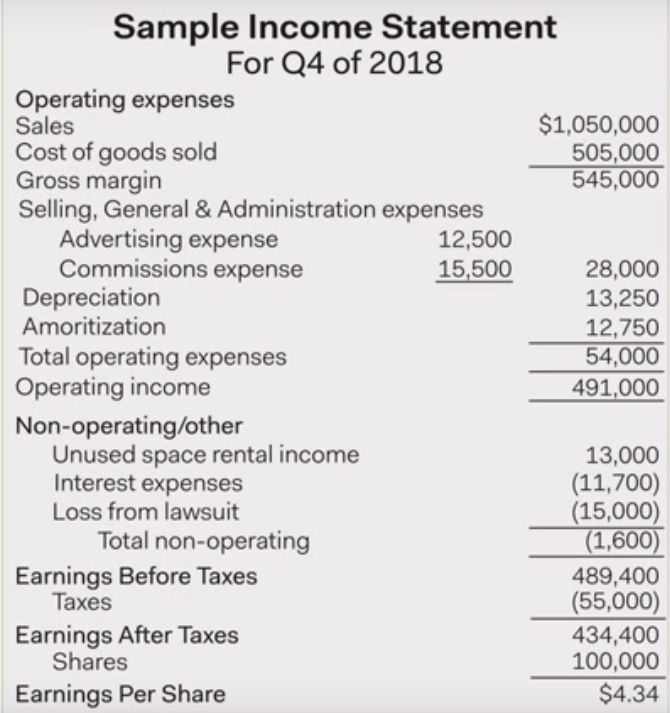
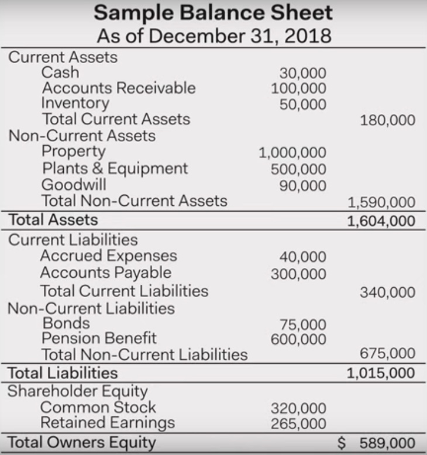

In understanding financial growth of a company while craeting an algorithm, it helps if we understand how to read the three main financial statements:
Income Statement
- Represents company's performance over a period in time.
- Contains info about company's revenue, expenses and net income.
- Predictions about company's earnings could be made using income statement. Which affects company's image in the market. 
- Its often split into two sections
- Operating
-
Contains info on primary business line of a company.
E.g. If a company's main line of business is Laptops, then operating section will contain info related to sale of laptops.
- sales refers to the revenue from sales of the finished goods.
-
cost of goods sold (cogs) refers to cost asoociated with materials that go into production of the good. (The raw materials nothing else)
-
Gross Margin is the profit before deducting non-product operating expenses.
- $Gross Margin = sales - cogs$
-
Now we list non-product operating expenses. These are the expenses not associated with cost of materials.
-
Selling, General and Administration Expenses (SGnA) are the expenses associated with the cost of producing the goods (except the materials).
E.g. Office Rent, Employee Salaries are examples of SGnA.
-
Depreciation is the cost of using fixed assets over the course of income period.
If $40 mil were spent on laptop manufacturing plant which could be used for 20 years, then each year the plant value would be depreciated by $2 million.
-
Amoritization is the process of paying off a debt with regular payments.
-
- Non Operating
- Contains info that is not related to company's primary line of business.
- Useful to isolate company's primary business line from other expenses which could still affect company's net revenue.
- Earnings per share : Earnings/Company's shares
- Useful to compare companies within same industries.
Balance Sheet
- It represents a company's performance at a specific point in time (date). 
- Often split into 3 sections
- Assets
- Assets are listed at the top of the balance sheet.
- They are listed in the order of their liquidity (i.e. how liquid they are.)
- There are two types of assets
- Current Assets are the assets which would take less than a year to be liquidated.
- Accounts Recievable is the amount to be recieved by the company from some sources which hasn't been received yet.
- Non-Current Assets are the assets which are illiquid i.e. would take more than a year if were to be liquidated.
- There are 2 types of non-current assets
- Tangible NCA : property, plants and equipments (PPnE) are example of tangible NCA.
- Non-Tangible NCA : example of non-tangible NCA is Goodwill
- There are 2 types of non-current assets
- Current Assets are the assets which would take less than a year to be liquidated.
- Liabilities
- Liabilities are the debts or obligations which a company owes.
- Liabilities are listed in order in which they should be paid out first.
- There are two types of liabilities:
- Current Liabilities are liabilities which could be paid out within one year.
- Accrued Expenses are salaries of emplyees which hasn't been paid yet.
- Non-Current Liabilities are liabilities which would take more than a year to be paid off.
- Current Liabilities are liabilities which could be paid out within one year.
- Shareholder Equity (Book Value)
- Ownership of a company by its shareholders.
- Common stocks are Proceeds from the sale of a common stock.
- Retained Earnings are the prior earnings which could be paid out as dividends in future.
- It could also be thought of as the networth of a company. i.e. the value of each share if company were to shut off, selling all of its assets and paying off all of its debts.
- It does not equal the public market value i.e. value of its share in public market could be different than shareholder equity.
- Balance sheet must always balance
i.e. $Assets = Liabilities + Shareholder Equity$
Cash Flow Statement
References
- https://www.youtube.com/playlist?list=PLRFLF1OxMm_XpPOrNgSiuNJoa0H1Nl8dt